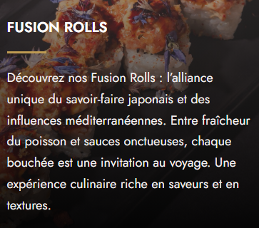
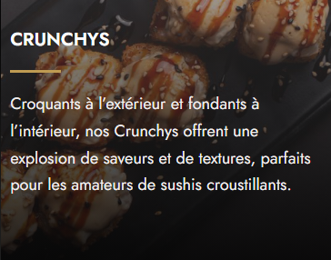
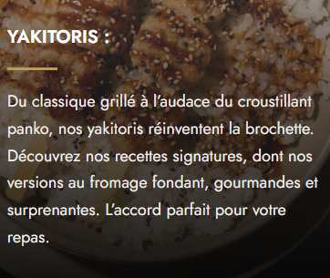

Découvrez:
Découvrez notre restaurant et laissez-vous séduire par nos délicieux sushis et nos spécialités asiatiques, préparés avec des ingrédients frais et beaucoup de passion.
Un voyage de saveurs dans une ambiance chaleureuse et moderne !
nos produits
- sushi : wave saumon , spicy crevette , futomaki , tempaura
- nos plat : soupe miso , salade de choux , chirach saumon
- buritto : shrimp buritto , salmon buritto , classic buritto
- poke bowl crevette tempura , poulet , spicy avocat , thon spicy , daurade
les plats preferes
|
 FUSSION |
 CRUNCHY |
 YAKITORIS |
Nos plats sont élaborés à partir d’ingrédients soigneusement sélectionnés et d’un savoir-faire d’exception, offrant des créations audacieuses qui réinventent chaque bouché
Découvrez également notre carte et laissez-vous séduire par une variété de saveurs uniques, pensées pour éveiller vos sens.
Reservation
nos horaire
Hiver: du dimanche au jeudi de 12h00 à 22h00, et les vendredis et samedis de 12h00 à 23h00. Été : du dimanche au jeudi de 12h00 à 23h00, et les vendredis et samedis de 12h00 à 00h00.
contact
Nous sommes à votre écoute
Une question ou une demande spéciale ?
L équipe SUSHI HOUSE est à votre écoute pour vous répondre rapidement et vous offrirla meilleure expérience possible.
- l'adresse :Route de Taniour km 3, Sfax 3044,Tunisie
- Email: contacter@sushihouse.tn
- Telephone : +216 55 100 750